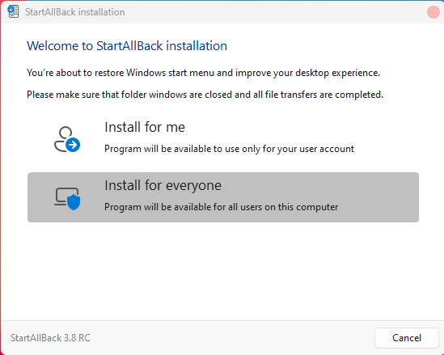
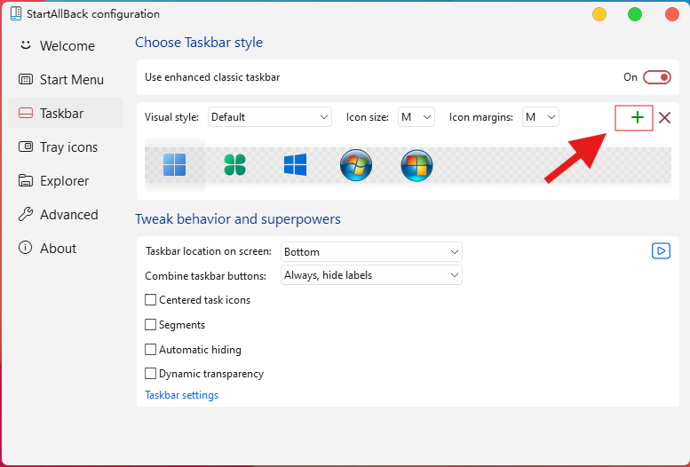
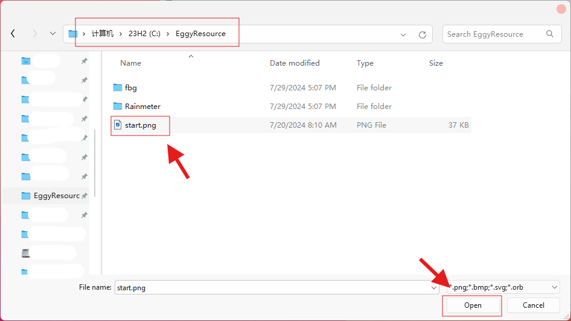
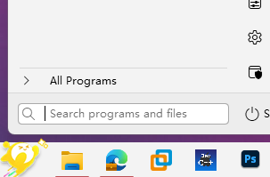
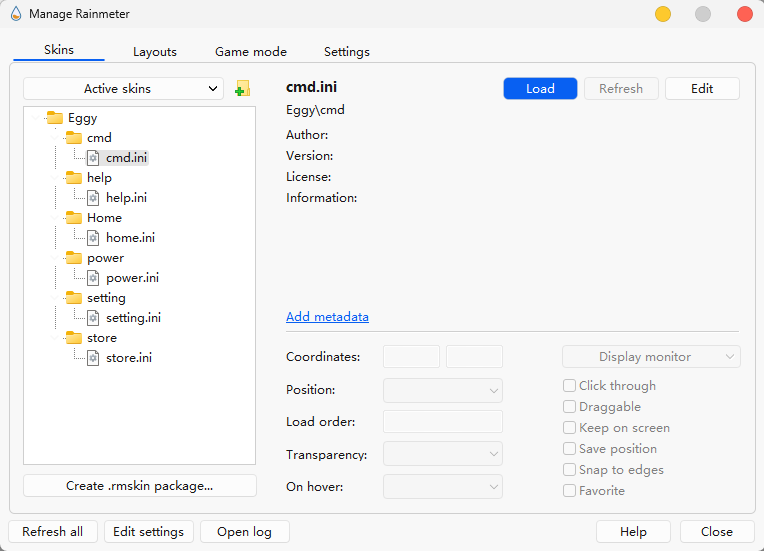
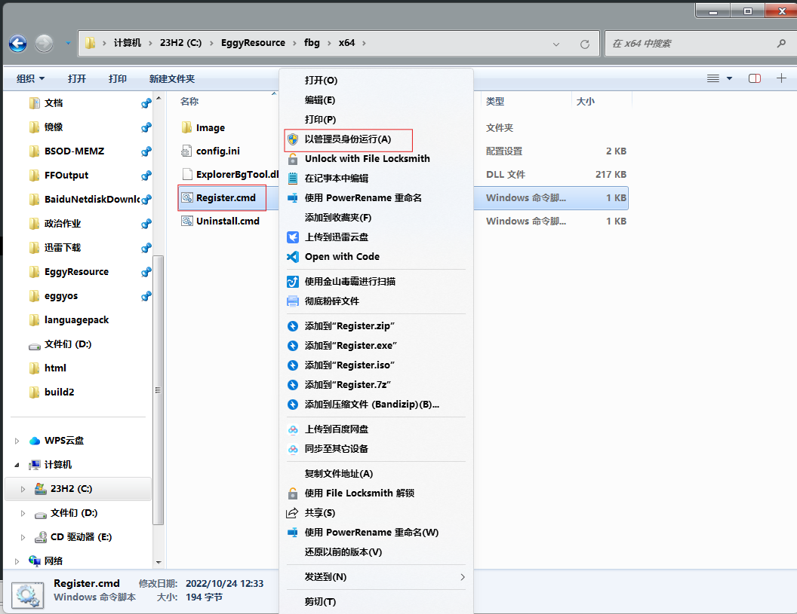

=====================================
为所有人安装StartAllBack
安装完成后，导入C:\EggyResource目录下的开始按钮图片
 选中导入的图片，开始按钮替换完成
请右键托盘区的Rainmeter按钮，进入Rainmeter皮肤管理器，然后像图片中的一样将皮肤一个一个load出来。
所有Rainmeter组件均可拖动，您可以将其放到合适位置。
如图，进入相关文件夹，以管理员身份运行图片所示的脚本，注册成功后不必重启计算机，重启资源管理器即可完成替换
现在到了最难的步骤：进入PE替换文件。为了不至于篇幅过长，我做了另外一个网页，去吧。
单击此处传送至pe.html